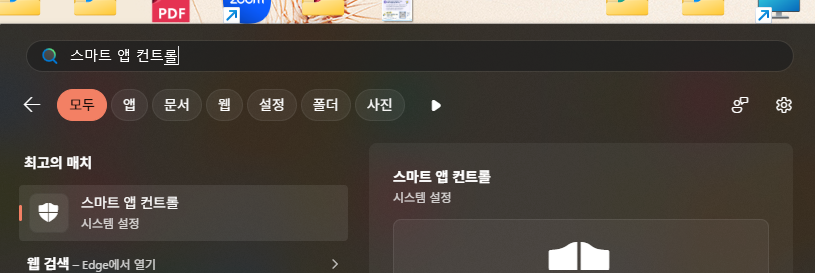
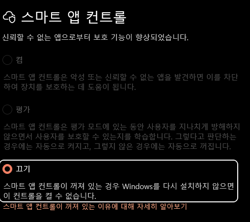
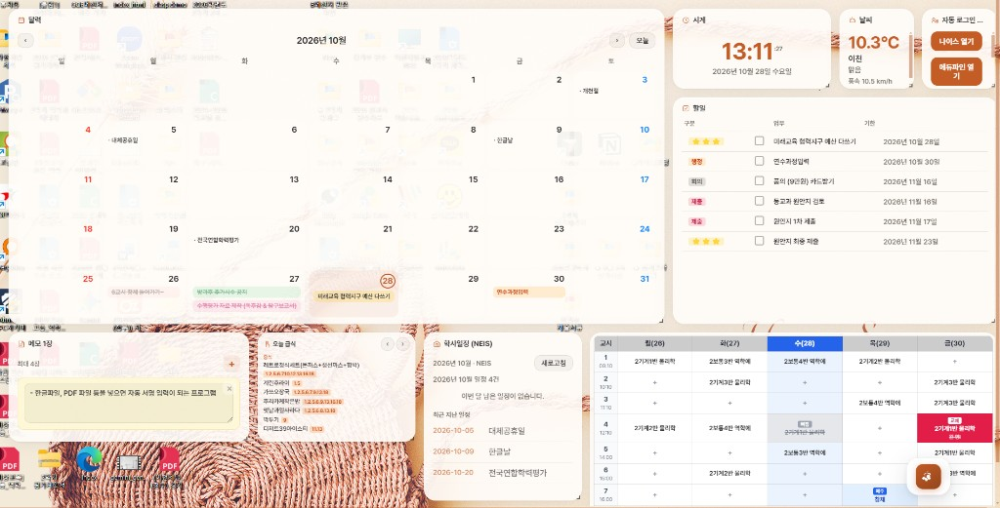

SchoolUtil 설치 파일은 아직 Microsoft 서명이 없어서, PC에 스마트 앱 컨트롤이 켜져 있으면 «신뢰할 수 없는 앱»으로 막히는 경우가 있어요. 설치가 안 되거나 exe가 바로 닫히면 아래를 먼저 해 보세요.
메뉴가 아예 없으면 이 PC에는 해당 기능이 없는 버전일 수 있어요. 그때는 1. 설치하기의 SmartScreen «추가 정보 → 실행»만 하면 됩니다.
SchoolUtil-Setup-x.x.x.exe 설치를 시도

바탕화면 한곳에서 시간표·급식·할 일을 모아 보는 작은 도구예요. 학교만 한 번 연결해 두면 급식·학사일정이 알아서 따라옵니다.
처음 설정은 3~5분이면 충분해요 · 예시는 이천제일고 기준
Setup 파일만 실행하면 됩니다.
SchoolUtil-Setup-x.x.x.exe 더블 클릭카드마다 역할이 달라요. 켜고 끄는 건 설정에서 자유롭게.

학교 연동 없이도 쓸 수 있는 것부터, 연동하면 빛나는 것까지.
한 달 그리드에 NEIS 학사일정과 할 일(마감일)이 함께 표시돼요. 날짜 클릭 → 그날 일정·할 일 정리.
할 일 추가는 달력 날짜 창이 가장 편해요
구분(수업·담임·행정 등)·업무·기한 표로 보기. 체크하면 완료. 미완료는 마감일 순으로 정렬돼요.
목록이 비면 달력에서 날짜 눌러 추가
학교 연동 후 NEIS에서 오늘 급식, 이번 달·오늘 학사일정을 가져와요. 달력에도 학사일정이 깔립니다.
설정 → 학교 연동
현재 시각·요일. 날씨는 Open-Meteo(무료) — 지역 이름·위·경도는 학교 연동 탭에서 바꿀 수 있어요.
학교 연동 → 날씨
칸에 직접 입력하거나, 컴시간으로 교사 시간표·교체 수업 반영. 빈 칸 (+)에서 «매주» / «이번 주만» 보정도 가능.
설정 → 학교 연동 (컴시간)
포스트잇처럼 여러 장. 색·글자 입력하면 자동 저장. 제목줄에 «메모 N장»으로 개수가 보여요.
카드에서 바로 입력
시험·행사·방학까지 며칠 남았는지 D-n / D-Day로 표시. 제목·날짜 넣어 추가.
D-Day 카드 하단 입력
앱 켤 때 하루 한 번, 오늘 마감 할 일·시간표·급식·오늘 일정 등을 모아 보여줘요. 글자 크기·보일 항목은 설정에서.
설정 → 카드 → 제일 메이트
나이스·에듀파인·교육청 포털·(선택) Brity 버튼. URL만 열기가 기본, 자동 로그인은 실험 기능.
설정 → 포털 (아래 6번 참고)
급식·학사일정이 «우리 학교» 기준으로 보이려면 이 단계가 필요해요. 보통 API 키 없이 학교 검색만 하면 됩니다.
이천제일고 예시로 따라 해 보세요.
이천제일고 입력 → 검색 → 목록에서 학교 선택
교육청·학교 코드가 자동으로 채워져요
이천으로 바꿔 두면 편해요
기본이 서울이면 온도가 달라 보일 수 있어요
NEIS 학교랑 컴시간 학교 코드는 서로 달라요. 같은 «학교 연동» 탭 아래에서 따로 맞춥니다.
이천제일 → 경기 이천제일고등학교 선택
김*처럼 가려져 있어도 정상)
나이스·에듀파인 버튼으로 바로 열 수 있어요. 안 써도 앱은 그대로 잘 돌아가요.
처음엔 이렇게만 (추천)
자동 로그인도 써 보고 싶다면 (실험 기능)
Chrome·Edge·Whale + 저장해 둔 인증서 정보로 로그인을 시도해요. 잘 안 되면 언제든 «URL만 열기»로 돌아오면 됩니다.
schoolutil-secrets.json에만 암호화 저장돼요.
백업 JSON에는 들어가지 않습니다.
취향대로 바꿔도 데이터는 그대로 남아요.
밝기·글꼴·글자 크기·카드 밀도·투명도. 위젯 모드에서 바탕이 비치게 조절할 수 있어요.
설정 → 테마
쓰지 않는 카드 끄기. 벤토·달력 중심·시간표 중심 등 프리셋으로 한 번에 배치. 카드는 드래그로 위치·크기 조절.
설정 → 카드
위젯 모드면 바탕화면 위에 카드만 얹어요(빈 곳 클릭 통과). 일반 창은 앱 창 전체. Windows 시작 시 자동 실행, 모니터 선택·화면 맞춤도 여기.
설정 → 표시
설정·할 일 등을 JSON으로 보내기/불러오기. 저장할 때 자동 백업도 만들어요. 설치판은 업데이트 확인으로 새 버전 받기.
설정 → 백업 · 데이터 위치 표시
설정 탭 한 줄 요약
트레이 더블 클릭으로도 앞에 보이기 · 창 닫기 = 트레이 숨김 (종료 아님)